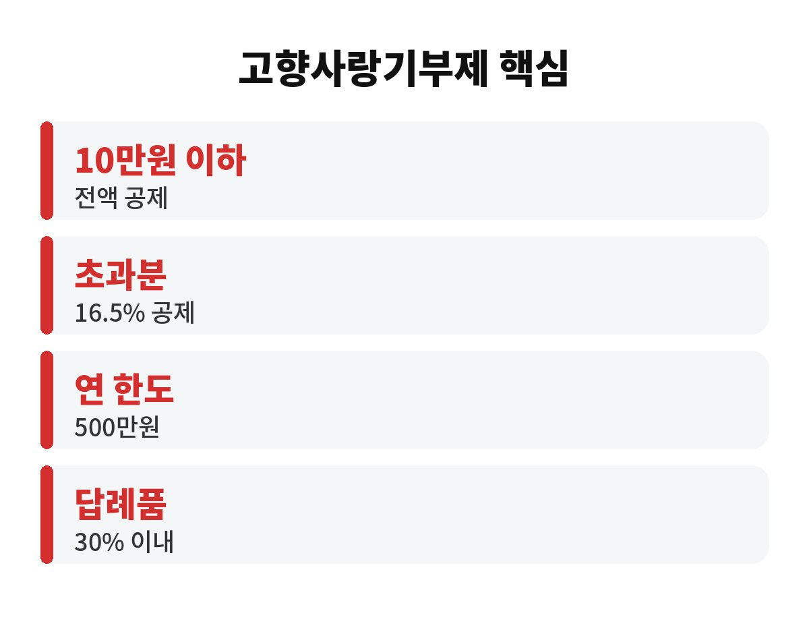

고향사랑기부제 세액공제는 10만원까지 기부하면 세금으로 전액 돌려받는 구조예요. 연말정산을 앞둔 직장인이라면, 돌려받는데 답례품까지 챙긴다는 게 정말인지 궁금하시죠?
연말이 가까워지면 카드 공제, 연금저축 얘기만 나오는데요. 고향사랑기부제는 의외로 "나는 해당 없겠지" 하고 넘기는 분이 많아요. 오늘은 고향사랑기부제 세액공제를 어렵지 않게 풀어볼게요.
네, 기부액 10만원까지는 전액이 세액공제 대상이에요. 구체적으로는 소득세에서 100/110을 공제받고, 나머지는 지방소득세에서 돌려받아 합치면 10만원이 되는 방식이죠. 그러니까 10만원을 기부하면 연말정산 때 10만원이 세금에서 빠진다고 보시면 됩니다.
여기에 지자체가 보내주는 답례품이 더해져요. 답례품은 기부액의 30% 이내로 정해져 있어서, 10만원이면 약 3만원어치를 받을 수 있습니다. 결과적으로 내 돈은 사실상 안 나가고, 오히려 지역 특산품이 생기는 셈이에요.
달라집니다. 10만원을 초과한 부분은 16.5%만 공제돼요. 그래서 처음 10만원은 "전액", 그 위는 "일부"라고 기억하시면 편해요. 연간 기부 한도는 500만원이고요.
예를 들어 30만원을 기부했다면 처음 10만원은 전액 공제, 나머지 20만원에는 16.5%가 적용됩니다. 공제만 보면 10만원 구간이 가장 효율이 좋아요. 그래서 많은 분이 딱 10만원만 하시는 거죠.
| 구분 | 공제 내용 |
| 10만원 이하 | 전액 세액공제 |
| 10만원 초과 | 16.5% 공제 |
| 연간 한도 | 500만원 |
| 답례품 | 기부액의 30% 이내 |

그해 12월 31일까지 기부한 금액이 해당 연도 공제 대상이에요. 다만 연말에는 결제가 몰리고 마지막 날에 서두르다 실수하기 쉬우니, 11~12월 안에 미리 해두는 게 마음 편합니다. 기부는 전국 어느 지자체든 가능하지만, 내가 사는 곳은 대상이 아니라는 점은 꼭 기억하세요.
또 하나, 세액공제는 낸 세금이 있어야 받을 수 있어요. 결정세액이 거의 없는 분은 돌려받을 금액이 줄어들 수 있으니, 본인 상황은 연말정산 간소화 서비스나 홈택스에서 한 번 확인해 보세요.
연말정산에서 낼 세금이 충분히 있는 직장인이라면 사실상 손해 볼 일이 거의 없어요. 월급에서 매달 소득세를 떼이고 있다면, 그 세금 중 일부를 내가 원하는 지역에 쓰이게 하면서 되돌려받는 셈이거든요. 반대로 프리랜서나 사업자도 종합소득세 신고 때 같은 공제를 받을 수 있어요. 다만 이미 다른 공제로 낼 세금이 거의 0원에 가까운 분은 효과가 줄 수 있으니, 올해 예상 세액을 먼저 가늠해 보시는 게 좋습니다.
그리고 한 가지 더. 기부는 한 번에 몰아서 하지 않아도 돼요. 여러 지자체에 나눠서 해도 공제 한도 안에서 합산되니, 마음에 드는 답례품이 여러 곳에 있다면 나눠서 신청하는 방법도 있습니다. 다만 합산 10만원까지가 전액 공제 구간이라는 점은 같으니 금액 계산은 꼭 해보세요.
소득공제는 소득에서 금액을 빼서 세금을 줄이는 방식이라 내 세율에 따라 효과가 달라요. 세액공제는 계산된 세금 자체에서 바로 빼주기 때문에, 소득이 높든 낮든 같은 금액이 줄어듭니다. 그래서 10만원 기부에 10만원 공제라는 단순한 그림이 가능한 거예요. 이 차이만 알아도 연말정산 항목을 고를 때 훨씬 판단이 쉬워집니다.
첫째, 거주지 지자체는 기부 대상이 아니에요. 둘째, 답례품은 지자체마다 종류와 재고가 다르니 먼저 둘러보고 고르세요. 셋째, 기부금 영수증은 연말정산 간소화 자료에 자동 반영되는 경우가 많지만, 빠진 건 없는지 마지막에 점검하는 게 좋습니다.
정리하면 10만원 한 번이면 세금은 돌려받고, 답례품은 덤으로 오는 구조예요. 괜히 복잡하게 느껴져서 미뤄두면 올해 공제 기회만 날아가니까요. 여러분은 올해 어느 지역 답례품이 끌리세요? 댓글로 알려주시고, 이런 연말정산 정보가 도움 되셨다면 구독도 눌러주세요.
※ 본 글은 투자 권유가 아닌 일반 정보이며, 세부 공제 조건은 개인 상황과 해당 연도 세법에 따라 다를 수 있습니다.